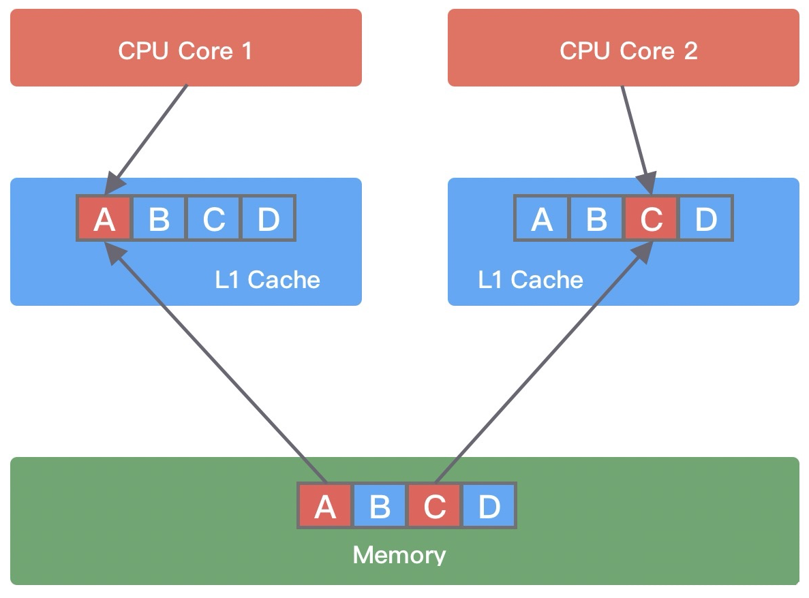

netty进阶
MpscQueue
Mpsc来自JCTools，即JAVA的高并发增强包，主要提供了一些 JDK 缺失的并发数据结构
- Spsc 单生产者单消费者
- Mpsc 多生产者单消费者
- Spmc 单生产者多消费者
- Mpmc 多生产者多消费者
Mpsc 的全称是 Multi Producer Single Consumer，多生产者单消费者，多个生产者线程通过CAS无锁操作提升性能，单个消费者不需要加锁；
Mpsc Queue 可以保证多个生产者同时访问队列是线程安全的，而且同一时刻只允许一个消费者从队列中读取数据。
MpscArrayQueue内部的环形数组容量为 2 的次幂，可以通过位运算快速定位到数组对应下标。
Netty Reactor 线程中的任务队列 taskQueue 必须满足多个生产者可以同时提交任务，所以 JCTools 提供的 Mpsc Queue 非常适合 Netty Reactor 线程模型
MpscArrayQueue为例
1 | |
在pad类中填充了大量long的数据，其命名没有什么特殊的含义，只是起到填充的作用，这是为了解决伪共享（false sharing）问题
伪共享问题
你的行为似乎有利于共享，但是却徒增消耗
为了平衡CPU与内存的速度差异，常常会设立多层缓存机制，一般是三层，CPU 读取数据时，首先会从 L1 查找，如果未命中则继续查找 L2，如果还未能命中则继续查找 L3，最后还没命中的话只能从内存中查找，读取完成后再将数据逐级放入缓存中。
此外，多线程之间共享一份数据的时候，需要其中一个线程将数据写回主存（总线嗅探机制保证可见性），其他线程访问主存数据。
CPU 缓存由若干个缓存行（Cache Line） 组成，缓存行是 CPU 缓存可操作的最小单位。
Cache Line 的大小与 CPU 架构有关，在目前主流的 64 位架构下，Cache Line 的大小通常为 64 Byte。
而 Java 中一个 long 类型是 8 Byte，所以一个 Cache Line 可以存储 8 个 long 类型变量。
CPU 在加载内存数据时，会将相邻的数据一同读取到 Cache Line 中（一次加载连续的 64 个字节），这样就可以避免 CPU 频繁与内存进行交互了。
例如：如果访问一个 long 型的单独变量 a，并且还有另外一个 long 型变量 b 紧挨着它，那么当加载 a 时候将免费加载 b
伪共享就会在此出现：
- 假设有 A、B、C、D 四个变量，线程1尝试修改变量A，于是将A和B、C、D一起都加载到了core1的一个 Cache Line；
- 此时，线程2读取变量B，也将A、C、D加载到了core2的同一 Cache Line；
- 线程1 对变量 A 进行修改，修改完成后将变量A值写回主存，然后 CPU1 会通知 CPU2 该缓存行已经失效；
- 线程 2 在Core2 中对变量 C 进行修改时，发现 Cache line 已经失效，所以需要重新从主存中读取数据加载到当前 Cache line 中。
当多个线程同时修改互相独立的变量时，如果这些变量共享同一个缓存行，就会出现写竞争，导致频繁从主存加载数据，影响性能。
常见的解决思路就是：以空间换时间，让不同线程操作的不相干变量加载到不同缓存行，避免相互影响
1 | |
变量 value 前后分别填充了 7 个 long 类型的变量。
这样不论在什么情况下，都可以保证在多线程访问 value 变量时，value 与其他不相关的变量处于不同的 Cache Line
MPSC方法解析
加入元素
1 | |
1 | |
1 | |
1 | |
1 | |

- 初始时，两个线程拿到的
pIndex都等于producerIndex为0，小于 producerLimit ； - 接着，两个线程都会尝试 CAS 更新 producerIndex + 1 ，必然只有一个线程能更新成功，另一个失败；
- 假设 Thread1 CAS 操作成功，那么它拿到的
pIndex为0，Thread2 失败后就会重新更新 producerIndex ，然后更新成功，拿到pIndex为1； - 最后，根据
pIndex进行位运算，得到数组对应的下标，然后通过UNSAFE.putOrderedObject()方法将数据写入到数组中。
获取元素
1 | |
因为只有一个消费者线程，所以整个 poll() 的过程没有 CAS 操作。
poll() 方法核心思路是获取消费者索引 consumerIndex，然后根据 consumerIndex 计算得出数组对应的偏移量，然后将数组对应位置的元素取出并返回，最后将 consumerIndex 移动到环形数组下一个位置。
1 | |
1 | |
1 | |
- Unsafe 方法
- **putOrderedXxx()**，使用 StoreStore 屏障，会把最新值更新到主内存，但不会立即失效其它缓存行中的数据，是一种延时更新机制；
- **putXxxVolatile()**，使用 StoreLoad 屏障，会把最新值更新到主内存，同时会把其它缓存行的数据失效，或者说会刷新其它缓存行的数据；
- **putXxx(obj, offset)**，不使用任何屏障，更新对象对应偏移量的值；
- **getXxxVolatile()**，使用 LoadLoad 屏障，会从主内存获取最新值；
- **getXxx(obj, offset)**，不使用任何屏障，读取对象对应偏移量的值；
总结：
MPSC实现高并发和高性能使用了哪些方法？
- LazySet 延迟更新机制：在更新producerLimit，消费者索引，和环形数组元素时使用StoreStore屏障，虽然写操作结果有纳秒级的延迟，但是由于没有立刻读取的操作，所以没有问题，且提升了性能
- 使用偏移量来更新数组元素，比下标性能更好
- 使用UNSAFE方法来直接操作内存
- 使用long型变量填充来避免伪共享问题